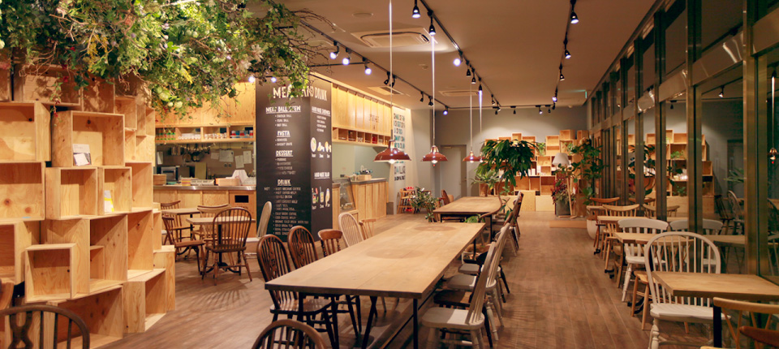

TRAVEL DIARLY 旅先で出会ったカフェテリア
/ San Francisco, CA

おいしい飲み物と食べ物はもちろん、一息つけるおち 着いた空間がいつでも暖かく向かえ入れてくれます。 今日は何を食べようかな?メニューを見て悩む空間もまた楽しいひとときです。 のんびり悩んでいると周りの人に迷惑になるかも…と思ってしまうときは、 混雑する時間帯を避けて行くことにします。
というのも、店員サンが忙しくしていないときであれば、こちら がちょっと不慣れな様子でも優しく対応してもらえることが多いからです。 メニューについてあれこれきいてみるのも、思わぬ発見があって楽しめます。